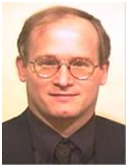
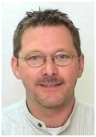
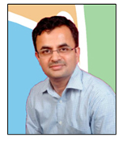
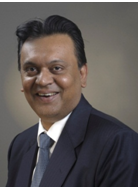
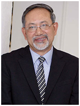
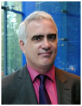
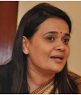
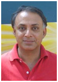
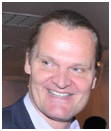
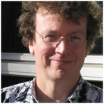

Speakers Biographies
Learn more about the conference participants below.
Dr S.K. Brahmachari, Ex-Director General, CSIR (India)

Prof. Samir K. Brahmachari, J. C Bose National Fellow, is currently also the Academy Professor of Academy of Scientific and Innovative Research and Chief Mentor of Open Source Drug Discovery. He served as the Director General of the Council of Scientific and Industrial Research, the largest chain of publicly funded industrial research and development institutions in the world, for over six years (2007-13). During his tenure he envisioned and created the Academy of Scientific and Innovative Research to generate human resource for transdisciplinary research by leveraging the infrastructure and scientific strength of CSIR and pioneered several inclusive innovation models. He is also the Founder Director of CSIR-Institute of Genomics & Integrative Biology, Delhi (1997-2007) and championed genomics research in India.
With vast experience in pioneering transdisciplinary research in the country, Prof. Brahmachari mentors young students and is actively involved in promoting innovations through application oriented education and research. Championing Open Source Research, he has conceptualized and established the Open Source Drug Discovery - a collaborative translational research platform for affordable healthcare and a model for Science 2.0.
He has been the member of National Innovation Council, Government of India (2010-14) and presently holds the Honorary Chairmanship of West Bengal Education Commission. He also serves in the advisory board of the U.S National Center for Biomedical Ontology, Stanford University and the ‘Access and Delivery Partnership for Neglected Diseases’ project of United Nations Development Programme. He is an elected fellow of The World Academy of Sciences and member of all four National Academies of Science & Engineering in India.
Susanne Dorasil, Head of Division, Sustainable Economic Policy, German Ministry for Economic Co-operation and Development

Susanne Dorasil is head of the division “Sustainable Economic Policy; Financial Sector” at the German Federal Ministry of Economic Cooperation and Development (BMZ). She is a member of the coordination committee of the Partnerships for Prosperity, the former building block private sector. Until recently, Susanne Dorasil served as a German co-facilitator of the G20 development pillar on Private Investment and Job Creation and as German co-chair of the sub-group on SME Finance of the Global Partnership for Financial Inclusion.
Susanne Dorasil was formerly Deputy Head of the Central Africa, West Africa II, Madagascar Division; Senior Advisor to the German Executive Director at the World Bank Group; Private Secretary to the Permanent State Secretary of the BMZ; and Deputy Head of the Legal Division. She studied law at the Free University of Berlin and holds a Master of Laws degree from King’s College London. She passed her bar examination in Berlin.
Carlos Guaipatin, Inter-American Development Bank

Carlos Guaipatin is a Senior Specialist in the Competitiveness and Innovation Division in the Inter-American Development Bank. He has over 10 years of experience in the field of private sector development and has worked for the Inter-American Development Bank since 2007. Carlos has worked as a consultant for IFC, GAF, GTZ, ECLAC, OAS, IDB and German Development Institute. His work includes projects for a variety of fields: promoting clusters and value chains, small and medium enterprise, technology and innovation, entrepreneurship and local economic development. He has worked in virtually every country in Latin America and in Southeast Europe. Additionally, Carlos has been published in several journals and has presented in over 20 countries in Latin America, as well as in Europe and America.
Prof. Dr. Anil Gupta, Founder, Honey Bee Network, Indian Institute of Management

Dr. Anil Kumar Gupta is a professor in the Centre for Management in Agriculture at Indian Institute of Management, Ahmedabad. He is also the founder of Honey Bee Network. Dr. Gupta earned his Ph.D. degree in management from Kurukshetra University (India) in 1986 after his masters in Biochemical Genetics in 1974 from Haryana Agricultural University, Haryana; Fellow, National Academy of Agricultural Sciences; Fellow, The World Academy of Art and Science, California 2001.
His research interests include ensuring recognition, respect and reward for grassroots inventors and innovators at a local, national and global level and protection of their Intellectual Property rights; Linking formal and informal science, ethical issues in conservation and prosperity of biodiversity, building global value chain to get the creativity its due; support to Honey Bee Network.
Amitabh Kant, Secretary, Department of Industrial Policy and Promotion, Ministry of Commerce and Industry, India

Mr. Amitabh Kant is Secretary, Department of Industrial Policy and Promotion (DIPP), Government of India. He is responsible for formulation and implementation of industrial policy and strategies for industrial development, formulation of Foreign Direct Investment (FDI) Policy and Promotion and facilitation of FDI, Policies related to Intellectual Property Rights (IPRs) in the fields of Patents, Trademarks, Industrial Designs and Geographical Indications. Amitabh Kant has been the key driver of “God’s Own Country” & “Incredible India” campaigns which branded and marketed Kerala and India as tourism destinations. As Secretary, DIPP, he is incharge of the “Make in India” initiative. He is the author of “Branding India – An Incredible Story”.
Amitabh Kant is also Chairman of the Delhi Mumbai Industrial Corridor Development Corporation (DMICDC) and National Productivity Council. The Delhi Mumbai Industrial Corridor (DMIC) is being developed by Government of India as a global manufacturing and investment destination supported by world class infrastructure and enabling policy framework. The DMIC project is aimed at the development of futuristic, smart industrial cities in India which will converge and integrate next generation technologies across sectors. The DMIC cities will address not merely the urbanization requirements of India, but with manufacturing as the main economic base, will also contribute significantly to the economic growth of India.
Dr. Venni Krishna – Professor, Jawaharlal Nehru University, New Delhi.

Dr. Venni V. Krishna is a Professor in Science Policy, Jawaharlal Nehru University, New Delhi with over 23 years of research and teaching experience in the areas of sociology of science and technology, including management of R&D, and science, technology policy and innovation studies. He has published over 30 research papers and five books. He is the founder-editor of Science, Technology and Society (Sage publications - Thousand Oaks, New Delhi, London and Singapore), an international journal devoted to Science and Technology studies. Dr. Krishna was a consultant to UNESCO, Paris, for its programs on electronic publishing in developing countries and the publication of the World Science Report 1998 and UNESCO Science Report 2005, and to the ILO in 2001 for its program on the informal sector. He holds a Ph.D. in Sociology of Science from the University of Wollongong, New South Wales, Australia.
Amit Lang , Director General, Ministry of Economy, Israel

Amit Lang was appointed Director General at the Israeli Ministry of Economy (previously known as the Ministry of Industry, Trade and Labor) in June 2013. Before joining the Ministry, Mr. Lang held numerous senior positions in both the public and private sectors. He previously held a number of senior positions in the Israeli Ministry of Finance’s budget division, including serving as Deputy Director of the budget division. Mr. Lang was Deputy Director General at Partner Telecommunications Company Ltd., one of Israel’s leading mobile services suppliers, heading the Economic and Regulations Division. Since 2006, Mr. Lang has served on Boards of Directors of several major companies and authorities, including; Israel Electric Corporation (IEC), Israeli Airports Authority (IAA), the Israel Water Authority and The Israel Sports Betting Board (head of the financial committee). Mr. Lang holds a Bachelor’s degree in economics, an MBA and a Master’s degree in Public Policy. Mr. Lang holds the rank of Third Dan black belt in Judo and was a member of Israel’s Olympic team at the 1992 Barcelona Games. Mr. Lang has won the title of Israel’s Judo Champion on seven different occasions and in 1994 placed 5th overall in the European Judo championship. Born in 1970, Mr. Lang lives in Shoham, Israel, together with his wife and three children.
Dr. Yan Li, Institute of S&T System and Management, Chinese Academy of Science and Technology for Development (CASTED)

Dr. Yan Li joined CASTED in the year of 2013 after graduating from Renmin University of China with doctor's degree in national economics. Before that, he worked as a bilingual lecturer at Capital University of Economics and Business, teaching foundation courses to students preparing to go abroad. Dr. Yan Li earned his master's degree in University of Wales, Lampeter (UK) in the year of 2007 in the subject of TEFL, after which he spent some time teaching survival English and citizenship to migrant workers in North Wales. Dr. Yan Li's current interests of research are NGOs or civil society's role in the national innovation system and reform of China's S&T system.
Dr. R.A. Mashelkar, President of the Global Research Alliance and National Research Professor

Dr. R.A. Mashelkar is the President of Global Research Alliance, a network of publicly funded R&D institutes from Asia-Pacific, Europe and USA with over 60,000 scientists. He served as the Director General of the Council of Scientific and Industrial Research (CSIR) for over eleven years. He was also the President of the Indian National Science Academy and President of Institution of Chemical Engineers (UK). Deeply connected with the innovation movement in India, he is currently the Chairman of India’s National Innovation Foundation and Marico Innovation Foundation besides being a member of I-20, the global summit of innovation leaders. He is on the Board of Directors of several industries and is a Fellow of several prestigious societies and academies. He has won several awards and received honorary doctorates from 28 universities. In 1998, he won the JRD Tata Corporate Leadership Award. In 2005, he received the BusinessWeek (USA) award of ‘Stars of Asia’. He received the Padma Shri in 1991 and the Padma Bhushan in 2000. He holds a Ph.D. in Chemical Engineering from the University of Bombay.
Juha Miettinen, Southern Africa Innovation Support (SAIS) Programme, Namibia

Mr Juha Miettinen, Chief Technical Advisor and Team Leader of Southern Africa Innovation Support (SAIS) Programme, has close to 20 years of experience in innovation systems development and innovation support, technology transfer, business development and methods in public-private collaboration regionally, nationally and internationally. Before joining SAIS in 2011, he worked as a COO in the one of the leading innovation and science park companies in Finland, Hermia Ltd, and as in his own daily management work, he has earned wide experience and practical knowledge on Finnish and European innovation systems and methods. He has wide experience in project management and has also been member of supervisory and steering boards of tens of innovation and development initiatives, programmes and projects throughout his carrier. Mr. Miettinen holds a M.Sc. in Economics from University of Tampere, Finland and University of Oregon, US. He is pursuing his PhD-work on the topic related to public-private collaboration models around innovation Southern Africa.
Imraan Patel, Deputy Director-General, Department of Science and Technology, South Africa

Employed since 2006 at the South African Department of Science and Technology, he currently holds the position of Deputy Director-General: Socio-Economic Innovation Partnerships and represents the department on the social and economic clusters of government and the advisory committee for the Green Fund. He is also a member of the board of MINTEK, the Water Research Commission, and the Southern African Science Service Centre for Climate Change and Adaptive Land Management (SASSCAL)
Prior to joining the DST, he served at the Centre for Public Service Innovation, an agency of government supporting innovation in the delivery of public services. He was also employed at the Department of Public Service and Administration for four years. He began his working life with a five-year stint at the Workplace Information Group (WIG), a non-governmental organisation providing health and safety support to trade unions followed by three-years during the formative years of the National Labour and Economic Development Institute (NALEDI), a think tank to the largest trade union federation in South Africa.
At the DST, he is responsible for strategically driving a portfolio of investments and policies that advances the social and economic development priorities of government through science and technology-based interventions.
Areas of focus include Information and Communications Technologies, Sector Development, Environmental Goods and Services with a focus on water and waste, Advanced Manufacturing, Mining and Minerals Beneficiation, Chemicals, Technology Localisation, Innovation for Inclusive Development, and indicators and measurement of systems of innovation.
Supriya Sankaran, Director, Venture and Fellowship, Ashoka India

Supriya leads Ashoka’s process of searching, selecting and engaging leading social entrepreneurs in India. She has personally been involved in launching more than 50 Ashoka Fellows with innovative solutions to address social problems and works with over 380 others, across a range of fields, to create opportunities for them to accelerate their impact. She has also launched collaborative initiatives between social entrepreneurs in the field of health and farming. Prior to joining Ashoka, she was a Principal Associate at Amarchand Malgadas, Delhi where she specialized in securities laws and capital market transactions. She is a graduate of NALSAR University of Law, Hyderabad India.
Mr. Amitabh Kant is Secretary, Department of Industrial Policy and Promotion (DIPP), Government of India. He is responsible for formulation and implementation of industrial policy and strategies for industrial development, formulation of Foreign Direct Investment (FDI) Policy and Promotion and facilitation of FDI, Policies related to Intellectual Property Rights (IPRs) in the fields of Patents, Trademarks, Industrial Designs and Geographical Indications. Amitabh Kant has been the key driver of “God’s Own Country” & “Incredible India” campaigns which branded and marketed Kerala and India as tourism destinations. As Secretary, DIPP, he is incharge of the “Make in India” initiative. He is the author of “Branding India – An Incredible Story”.
Andrew W. Wyckoff, Director OECD Directorate for Science, Technology and Innovation

Andrew W. Wyckoff is the Director of the OECD’s Directorate for Science, Technology and Innovation (STI) where he oversees OECD’s work on innovation, business dynamics, science and technology, information and communication technology policy as well as the statistical work associated with each of these areas.
Mr. Wyckoff was previously Head of the Information, Computer and Communications Policy (ICCP) division at the OECD which supports the organisation’s work on information society as well as consumer policy issues. Before heading ICCP, he was the head of STI’s Economic Analysis and Statistics Division which develops methodological guidelines, collects statistics and undertakes empirical analysis in support of science, technology and innovation policy analysis.
He has served on various advisory groups and panels which currently include co-chairing the US National Academies’ panel on Developing Science, Technology and Innovation Indicators for the Future , being a member of the Research Advisory Network for the Global Commission on Internet Governance and being a named to the Malaysian Prime Minister’s Global Science and Innovation Advisory Council.
His experience prior to the OECD includes being the Program Manger of the Information Technology and Commerce Program at the US Congressional Office of Technology Assessment (OTA), the US National Science Foundation (NSF) and The Brookings Institution.
Sukla Chandra General Manager, Global Research, Bangalore and Director, Legal, PACE, GE Global Research

Sukla Chandra is the General Manager, Global Research, Bangalore, and Director, PACE (Patents and Analytics Center of Excellence) at JFWTC, Bangalore. As the General Manager of Global Research, Bangalore, Sukla is responsible for all the operational aspects of a research group of 300+ scientists.
As the Director of PACE, she is responsible for managing a team of IP professionals providing strategic IP support to GE Global Research and several other GE businesses. Sukla has several patents, and is registered with the USPTO. She also co-leads the GE Women’s Network Initiatives for India.
Sukla graduated from Jadavpur University Kolkata with a BS degree in Chemical Engineering, following which she worked with companies including Nalco Chemicals in India. Subsequently, she received her Master’s degree from the US in Chemical Engineering, and worked in Air Products and Chemicals in Attentown, PA, in their process engineering group.
Sukla moved back to India in 1999, and headed the Process Engineering group at British Oxygen. In 2000, she joined John F Welch Technology Centre, Bangalore, as a research scientist for GE Plastics. After three years there, she joined the legal team in Global Research, and took over as a director for the group in 2008. She rose to become General Manager, Global Research, Bangalore, recently.
Sukla moved back to India in 1999, and headed the Process Engineering group at British Oxygen. In 2000, she joined John F Welch Technology Centre, Bangalore, as a research scientist for GE Plastics. After three years there, she joined the legal team in Global Research, and took over as a director for the group in 2008. She rose to become General Manager, Global Research, Bangalore, recently.
Senapathy ‘Kris’ Gopalakrishnan, Immediate Past President of CII, Chairman of CII Innovation and Entrepreneurship Council

Senapathy ‘Kris’ Gopalakrishnan served as the Vice Chairman of Infosys from 2011 to 2014, and as its Chief Executive Officer and Managing Director from 2007 to 2011. Kris is one of the co-founders of Infosys.
Recognized as a global business and technology thought leader, he was voted the top CEO (IT services category) in Institutional Investor's inaugural ranking of Asia's Top Executives. He was selected as one of the winners of the 2nd Asian Corporate Director Recognition Awards by Corporate Governance Asia in 2011. Kris was also selected to Thinkers 50, an elite list of global business thinkers, in 2009. He was elected President of India's apex industry chamber, the Confederation of Indian Industry (CII) for 2013 – 14, and served as one of the co-chairs of the World Economic Forum in Davos in January 2014.
In January 2011, the Government of India awarded Kris the Padma Bhushan, the country’s third highest civilian honor.
He serves on the Board of Governors of Indian Institute of Technology, Madras, and Indian Institute of Management, Bangalore. He is the Chairman of the Board of Governors of IIIT, Bangalore, and is also on the Board of Trustees of the Chennai Mathematical Institute.
Kris holds master’s degrees in physics and computer science from the Indian Institute of Technology, Madras.
Dominique Guellec, Head of Division, Directorate for Science, Technology and Innovation, OECD

Dominique Guellec is Head of the Science and Technology Policy (STP) Division, within the Directorate for Science, Technology and Innovation (DSTI) of the Organisation for Economic Co-operation and Development (OECD). This division covers notably the following issues and activities: innovation policies, science policies, biotechnology and nanotechnology issues, national innovation studies, innovation for development, the STI Outlook, the Space Forum.
Mr. Guellec joined the OECD in 1995 and has worked in the DSTI on statistics and quantitative economic analysis of research and development, innovation and growth. From 2004-2005, Mr. Guellec was Chief Economist of the European Patent Office (Munich). Mr. Guellec has authored several books and many articles on patents, innovation and economic growth. His (co-) publications in English include The Economics of the European Patent System (Oxford University Press, 2007); From R&D to Productivity Growth: the Sources of Knowledge Spillovers and their Interaction (Oxford Review of Economics and Statistics, 2004).
Of French nationality, Mr. Guellec is a graduate from the École nationale de la statistique et de l’administration économique (ENSAE, Paris).
Yongsuk Jang, Ph.D., Research Fellow, Science and Technology Policy Institute (STEPI) of Korea

Dr. Jang is research fellow of the Science and Technology Policy Institute (STEPI), a policy think-tank for science, technology and innovation (STI) policies in Seoul, Korea. Prior to his current position, he had worked as a senior research scientist at the Center for International Science and Technology Policy (CISTP) of the George Washington University (GWU), Washington, DC and remains as a research associate in the same institute.
His primary research interests are STI policies with focus on R&D program evaluation, industrial R&D collaboration, national innovation system, and international cooperation for innovation. Recently he focuses on innovation for development and science diplomacy.
He consults various domestic and foreign government agencies and international organizations including OECD, APEC and IDB. He actively publishes and involves in a number of academic associations such as American Evaluation Association (AEA), The Korea Society for Innovation Management & Economics (KOSIME), and so on. He serves as a vice-chair to the Committee of Science and Technology Policy (CSTP) of OECD. He also serves as the managing editor of ‘STI Policy Review,’ an international journal on STI policies around the world with special focus on Asian countries.
He holds a Ph.D. in Public Policy from the George Washington University and a M.A. and B.A. in Public Administration from Kyungbook National University. He is married with an only son.
Dr. Gopichand Katragadda, Group Chief Technology Officer, Tata Sons

Dr. Gopichand Katragadda is the Group Chief Technology Officer for Tata Sons. In this role, Gopi drives technology and innovation for the Tata conglomerate leveraging cross-company synergies. He is a director on the boards of select Tata Companies.
Previously, as the Chairman and Managing Director of GE India Technology Centre, he facilitated funding of cross-business innovation, championed the commissioning of new research labs, developed research teams, and helped build GE’s largest R&D Centre – the John F. Welch Technology Centre (JFWTC).
Gopi provides the voice of technology for various Industry bodies in India including CII and NASSCOM. He is the India Chair for the Technology track of the Indo-UK Joint Economic and Trade Committee, which facilitates the Government to Government negotiations on market liberalization. Gopi chairs the India Development Panel and is a Fellow of the Institute of Engineering and Technology. He is on the India Council for the Anita Borg Institute. He is a GE Certified Six Sigma Master Black Belt. Gopi has over 30 publications and 5 patents. He has authored a book on innovation “SMASH,” published by Wiley.
Gopi holds MS and PhD degrees in Electrical Engineering from Iowa State University, Ames, Iowa.
Dr David Ireland - General Manager, International and Innovation Systems, the Commonwealth Scientific and Industrial Research Or

Dr David Ireland is the General Manager, International and Innovation Systems at the Commonwealth Scientific and Industrial Research Organisation (CSIRO). In this role Dr Ireland builds and manages key national and global strategic partnerships, the organisation’s global innovation precinct strategy, and innovation policy.
Dr Ireland is currently a Governor of WWF Australia and is the Chair of the Federal Government’s Horizon Scanning working group. He has previously worked in research commercialisation and management consulting, has spun-out a number of companies, and has been a post doctoral researcher at the University of Queensland’s Institute for Molecular Biosciences and the UQ Business School.
Dr Ireland has over 20 science and business academic journal publications, has published in a number of popular magazines and newspapers, and is regularly invited to present on innovation, foresighting, and creativity.
Dr Ireland has a PhD in chemistry and innovation theory from the University of Queensland.
Karen Maguire, Directorate for Governance and Territorial Development, OECD

Ms. Maguire is a Counsellor/Project Manager on Regional Development and Innovation in the OECD’s Regional Development Policy Division. Her current work focuses on policies regarding regional economic development, innovation systems and clusters. She is the main author of several OECD publications, including Regions and Innovation: Collaborating Across Borders; Regions and Innovation Policy and Competitive Regional Clusters: National Policy Approaches. She manages the series of OECD Regional Innovation Reviews, and is primary author for reviews in the North of England, Mexico (15 states), Catalonia and the Basque Country (Spain), and Central and Southern Denmark. Prior to joining the OECD, Ms. Maguire worked as an investment banker for UBS in New York, an international consultant in economic development and a research analyst for the Urban Institute in Washington, D.C. She holds a Bachelor’s degree in economics and sociology from the University of Chicago and a Master in Public Policy from Harvard University’s Kennedy School of Government.
Mathilde Miedema, Program Manager, Innovation for Development, Leiden, The Netherlands, TNO

Mrs Drs Mathilde Miedema (1965) is currently program manager at TNO – the Innovation Institute of the Netherlands with 3900 employees and a turnover of 564 M€ in 2013. Mathilde manages the corporate program Innovation for Development with focus on Inclusive Innovation and Inclusive Business. Mission is to develop the huge social and economic potential of the 4 billion people with an income below $ 3 a day in developing countries and emerging economies. Through knowledge transfer, innovative technologies / services and start-ups TNO realizes access to nutrition, water, health, sustainable energy and clean production, safety and ICT. On the one hand this has impact on entrepreneurship, income and wealth of people with lowest incomes and on the other this creates opportunities for Dutch businesses. Mathilde believes in co-creation and strategic partnerships to obtain successful market based inclusive innovations.
Mathilde Miedema studied Physiotherapy at The Hague (graduated 1986) and Human Movement Science at the Rijks Universiteit Groningen in the Netherlands and got her Master’s on the major Work and Health (graduated 1992). She worked in Indonesia for 1,5 year for Yayasan Sayab Ibu. From 1993 she works at the department of Ergonomic Innovation at TNO Quality of Life in the Netherlands. Starting as researcher/consultant on physical load and Ergonomics and growing to senior project manager and account manager. Since 2007 she is senior program manager Innovation for Development and conduct projects in many African and Asian countries. She participates in networks like Inclusive Business Alliance, Global Research Alliance, WAITRO and NABC.
Dr. Pierre Mohnen, Professor, UNU Maastricht Economic and Social Research Institute on Innovation and Technology

Dr. Pierre Mohnen is Professor of Microeconometrics of Technical Change at the Faculty of Economics and Business Administration of Maastricht University and Professorial Fellow at the UNU Maastricht Economic and Social Research Institute on Innovation and Technology (UNU-MERIT). His research areas are the economics of production, applied econometrics, productivity and innovation. In the past he has estimated private and social rates of return on R&D, compared productivity performances across countries, in particular the role of R&D, investigated the determinants of innovation, of the proximity between private and public research institutions, and of total factor productivity growth. On the policy side, he does work on the effectiveness of R&D tax incentives and of direct support measures towards innovation. He is presently working on projects relating to structural models linking R&D to productivity via innovations, linking competition and productivity, complementarities in innovation policies, the economics of intellectual property rights, and the estimation of informational rents in public contracts. He holds an M.A. in economics from the Catholic University of Louvain and a Ph.D. in Economics from New York University.
Caroline Paunov, Directorate for Science, Technology and Innovation, OECD

Caroline Paunov is an Economist at the Directorate for Science, Technology, and Industry of the OECD. She is managing the OECD’s “Innovation for Inclusive Growth” project, which aims at assessing how innovation affects inclusive growth. Caroline also leads work on national intellectual property rights systems in emerging countries and on the evaluation of impacts of public research on innovation. Her academic research work focuses on enterprise development issues, including firms’ productivity and innovation performance, as well as the impacts of foreign direct investment, trade and liberalization policies. Her research has been published in leading academic journals, including the Review of Economics and Statistics, the Journal of Development Economics, the Canadian Journal of Economics and Research Policy. Previously, Caroline worked for the World Bank, the United Nations and cooperated on various projects for the public sectors in Brazil, Spain and Germany. She holds a B.A. and M.A. (Hons) from the University of Oxford, a M.Sc. from the University Pompeu Fabra and a Ph.D. in Economics from the University of London.
Gopalan Sunderraman, Executive Vice President - Corporate Development, Godrej & Boyce Mfg Co Ltd, India

Mr. Sunderraman is an engineering graduate from IIT Madras and a postgraduate in management from IIM Ahmedabad. He has worked with Godrej group for over 35 years in marketing, manufacturing, quality, strategic planning, supply chain and innovation.
He is actively involved in several nationwide initiatives of the Confederation of Indian Industry. He is a visiting faculty in many Management Institutes.
Currently he is driving the corporate initiative on Breakthrough Management and Disruptive Innovation (DI) in several businesses across Godrej, working closely with Prof Shoji Shiba who has been associated with the globally recognized Leadership for manufacturing program in MIT and Prof Clayton Christensen of Harvard Business School. He is a key founding member of Indo-Japan collaborative initiatives of Visionary Leadership for Manufacturing program (VLFM) and Village Buddha for Inclusive Rural Growth.
He has been personally spearheading the ‘Chotukool’ small cooler project as the Corporate Leader of the DI initiative.
Godrej and Boyce Mfg. Co. Ltd. manufactures and markets refrigerators; washing machines; air conditioners; office furniture; home furniture; security equipment such as safes for banks and homes; locks and latches, forklift trucks and warehousing equipment; process equipment for petrochemical and allied industries; precision tools and real estate development.
Amit Bhatia, CEO of Impact Investors Council (IIC), India
Amit Bhatia, an award-winning social entrepreneur, is the Founding CEO of Impact Investors Council (IIC) in India (www.iiic.in). IIC members have cumulatively invested $1.6 billion in 300+ social enterprises in India, across sectors like financial inclusion, affordable education & healthcare, water & sanitation, livelihoods, agriculture, clean energy, etc. IIC focuses on impact measurement & standardisation, research & policy support and self-regulation for the impact-investing sector in India. Amit is also Founder & Chair of Aspire, an Employability Education firm in India and the Managing Trustee of Aspire Circle, a not-for-profit forum promoting enlightened social leadership in India through Fellowships and Research. Amit has 24 years of management experience and till 2007 served as CEO of WNS Knowledge Services, successfully listing WNS on NYSE with a $1 billion IPO. Prior to WNS, Amit was the Founding Country Manager for FreeMarkets, Inc. Most notably, Amit conceived, founded and led the McKinsey Knowledge Centre in India, the consulting firm’s global research centre. He has also held Business & Financial Analysis positions at American Express. Amit has a Bachelor’s degree from Shri Ram College of Commerce; Master’s Degree from Delhi School of Economics with a University Gold Medal; is a qualified Cost & Works Accountant; and is Fellow of The Aspen Institute.
Dr. John Blomquist, India Program Leader for Social Inclusion, WBG
Dr. John Blomquist is Lead Economist and India Program Leader for Social Inclusion at the World Bank. In addition to helping to coordinate the social sector work of the Bank such as education, health and social protection, his technical work focuses on labour markets and skills development as well as social protection programmes especially for the informal, unorganized sector. Over the past 20 years he has worked in both the private and public sectors across a range of countries including the United States, South Asia, Middle East and North Africa, Sub-Saharan Africa, East Asia and Pacific, Europe and Central Asia and Latin America. Dr. Blomquist holds a Ph.D. in economics from the University of Pennsylvania. He has lived and worked in India for the past 5 years, residing in New Delhi.
Abu Hasnat Chowdhury, Deputy Director (Water and Sanitation), ASA, Bangladesh
As a Deputy Director (Water & Sanitation) and Team Leader of Water & Sanitation Program of ASA, Mr. Chowdhury is closely associated with the implementation and making policy of ASA’s water and sanitation program since January 2014. Prior to that, Mr Chowdhury was deputed to Nigeria as the Team Leader of ASA International Nigeria to establish Micro Finance Bank (MFB) and provided technical assistant to a local MFI. After establishing AHSA Microfinance Bank, performed as Managing Director in the same bank. At the same time, established an MFI namely Association for Social and Economic Advancement (ASEA) and played role as the CEO. Mr. Chowdhury advised international organizations on sustainable micro credit programs, and worked in the micro-finance program of BRAC and RDRS (National NGO in Northern Bangladesh).
Rob Floyd, Director for Operations, Strategy & Innovation for the Leadership, Learning and Innovation Vice Presidency at WB
Rob Floyd is Director for Operations, Strategy and Innovation for the Leadership, Learning and Innovation (LLI) Vice Presidency at the World Bank. In this role he oversees a range of corporate and institutional mandates including South-South Knowledge Exchange, Results, Budget, Partnerships and Fundraising, and Innovation as well as corporate representation for LLI within the World Bank. Mr. Floyd manages a Department of 80, including staff based in Seoul, Beijing, Moscow, New Delhi, and Washington. Mr. Floyd joined the Bank in 1995 and has worked in Africa as the Economist in the Office of the Vice President and as a Public Sector Specialist; in the Office of the President as Assistant to the President and then Chief of Staff to Presidents James Wolfensohn and Paul Wolfowitz; in South Asia as Country Coordinator for Pakistan and Bangladesh, and Interim Country Director for Bangladesh in 2009-2010. He joined WBI as a manager in February 2010. An economist and journalist by training, Mr. Floyd worked as an advisor to foreign governments on trade and agricultural policy and consultant in the private sector focused on trade and investment before joining the World Bank in 1995. He was Director of Research at the GIC Group in Alexandria, Virginia immediately prior to his career in the World Bank.
Tobias Linden, Lead Education Specialist, World Bank Group
Toby Linden is a Lead Education Specialist in the World Bank Group’s Education Global Practice, where he leads the Bank’s education team in India. He has a long and diverse career working in different countries across the globe with the World Bank as well as a stint as Executive Director of the Roma Education Fund, based in Budapest, Hungary. His current work focuses primarily on secondary and higher education, including working with the national and state governments on reforming India’s system of 30,000 higher education institutions.
Johannes F. Linn, Nonresident Senior Fellow, Global Economy and Development, The Brookings Institution, USA
Mr. Linn is a Resident Senior Scholar at the Emerging Markets Forum in Washington, D.C., a Senior Advisor at the Results for Development Institute, and a Non-resident Senior Fellow at the Brookings Institution, and currently serves as the chair for the 10th Replenishment Consultation of the International Fund for Agricultural Development. From 2005-2010 he was Director of the Wolfensohn Center for Development at Brookings. Prior to joining Brookings in 2003, he worked for three decades at the World Bank in various capacities, including as the Bank’s Vice President for Financial Policy and Resource Mobilization (1991-1995) and Vice President for Europe and Central Asia (1996-2003). Johannes Linn has published extensively on development and global governance issues, including a book that he co-edited on Getting to Scale: How to Bring Development Solutions to Millions of Poor People (Brookings Press 2013). His current research interests and recent publications are in the areas of development effectiveness (with a special focus on scaling up successful development interventions), on global governance reform, on urbanization, and on regional cooperation (with a special focus on Central Asia). Linn holds a Bachelor degree from Oxford University (1968) and a doctorate in economics from Cornell University (1973).
Sudesh Menon, CEO, Waterlife, India
Sudesh Menon is widely credited with pioneering the concept of sustainable community water systems in India. He has led both start-ups and large multinationals in India and globally. He returned to India in 2006, on an invitation from Dr. Anji Reddy - Founder Chairman of Dr. Reddy’s Laboratories to pioneer a unique business model of providing access to safe water in rural India. Working with the government and various policy makers, the concept was immensely successful and adopted widely across businesses and government. Sudesh co-founded Waterlife in 2008 which has grown rapidly and occupies a unique position among water sector innovations. Prior to Waterlife, Sudesh was country head for G E Business, based in Kuala Lumpur, Malaysia. Sudesh is a Governing Council member of NASE ( National Association of Social Entrepreneurs ) and a regular speaker on various panels on Entrepreneurship. He was also part of the National Expert Committee on Sanitation. Sudesh is a B.Tech in Electrical Engineering from IIT, Kharagpur and holds a management degree.
Dr. Francis L. de los Reyes III
Dr. Francis de los Reyes III is a Professor of Civil, Construction, and Environmental Engineering, Associate Faculty of Microbiology, and Training Faculty of Biotechnology at North Carolina State University. He has been teaching and doing research on wastewater engineering for 22 years. For the past 14 years, he has been teaching undergraduate and graduate classes on drinking water treatment, wastewater treatment plant design, environmental microbiology, environmental biotechnology, and water and sanitation in developing countries. His research focuses on biological processes and combines modeling, bioreactor experiments, and molecular microbial ecology tools in addressing fundamental and practical issues in environmental biotechnology and environmental engineering. He has also worked in sanitation issues in developing countries, and has active collaborations in the Philippines, India, China, South Africa, Malawi, and Belgium.
Shireesh Sahai, Director – Government Business, India & South Asia, Wipro GE Healthcare
Shireesh Sahai leads Government Business for India & South Asia for Wipro GE Healthcare. He has been with GE Healthcare for last 15 years, having worked both in India and USA. In GE, he has been involved in multiple modalities, including X-ray, MRI, CT, Surgery and Interventional, in different capacities including Marketing, Product Development, Quality, Supply Chain and as Business Leader. Before joining GE, he has worked in Automobile sector including General Motors. He has a Bachelor Degree in Mechanical Engineering (BE-Mech.) from Delhi College of Engineering (DCE), Delhi University and Masters in Business Administration (MBA) from Faculty of Management Studies (FMS), Delhi University.
Upendra Bhatt , Managing Director, cKinetics
Upendra Bhatt is a ‘Go-to-market’ and techno-commercial specialist with expertise in technology evaluation & linkages. He has been closely associated with the conventional and renewable energy generation and infrastructure domain in South Asia and has worked on shaping innovative market based models for mainstreaming of technology and service interventions in the developing markets. He has been involved in building and scaling early-stage ventures – he has been an early stage investor and co-founder of Intellecap which has emerged as one of the fastest growing strategic services firm in the international development arena and has also been instrumental in establishing and ramping up the international operations for an Indo-US telecom services firm through its acquisition of a NASDAQ listed firm. In the early years of his career, UB held a multitude of sales, corporate development, strategic planning, and hands-on project management roles at Fortune 500 companies, Itochu Corporation and Skanska AB, where he was particularly successful in establishing their South Asian Energy Portfolio through several cross-border joint ventures. UB has a Masters in International Relations from Thunderbird – The American Graduate School of International Management, a Master of Business Administration from NMIMS-Mumbai, (India) and an engineering degree from Delhi College of Engineering (India). He is an avid traveler and explorer of new cultures and his passion is social institution building and public affairs.
Dr. Nomal Chandra Borah, Chairman and MD, GNRC, India
Dr. Nomal Chandra Borah serves as the Chairman and Managing Director at GNRC Community Hospitals Limited and GNRC Hospitals Ltd. Dr. Borah got admission into the MBBS course at Guwahati Medical College on merit list. He joined the Medical College as a demonstrator in Pathology and completed his Diploma in Clinical Pathology. He completed his MD degree in Internal Medicine, Dr. Borah joined AIIMS (All India Institute of Medical Sciences) as Senior Resident, where he completed his 3 years training in Neurology leading to DM degree. In 1992, he did a Graduate Summer Course in Epidemiology and Biostatistics from the University of Michigan, USA and in 2003, he was awarded the Fellow of the American Academy of Neurology (FAAN) for his contribution to neurological services.
Denis Dambois, head of the Research and Innovation section, Delegation of the European Union to India, European Commission
Since September 2013, Denis has been heading the Research and Innovation Section of the Delegation of the European Union to India (Delhi), where he contributes to the establishment of EU-India collaborative projects, to the implementation of the Indo-European Research and Innovation Partnership, and to the coordination of EU Member States' R&I activities in India. Denis works in the European Commission since 1999, where he has been responsible for R&D-related intellectual property and technology transfer issues in addition to horizontal issues such as technology transfer. Prior to the European Commission, Mr. Dambois worked at Philips Industrial Activities and Solvay s.a., a multinational chemical company. Denis holds a M.Sc. in electromechanical engineering from the Brussels University (ULB).
Safeena Husain, CEO, Educate Girls, India
 A London School of Economics graduate, Safeena has worked extensively with rural and urban underserved communities in South American, Africa and Asia. After returning to India, Safeena chose the agenda closest to her heart – girls’ education. Safeena’s efforts to bridge the gender gap in education in India have been widely recognized. Under her leadership, Educate Girls has received the 2014 WISE Awards, the 2014 USAID Millennium Alliance Award and the 2014 Stars Impact Awards, the British Asian Trust’s Special Recognition Award from HRH Prince Charles for outstanding contribution in education and the India Development Marketplace Award in 2011 from the World Bank.
A London School of Economics graduate, Safeena has worked extensively with rural and urban underserved communities in South American, Africa and Asia. After returning to India, Safeena chose the agenda closest to her heart – girls’ education. Safeena’s efforts to bridge the gender gap in education in India have been widely recognized. Under her leadership, Educate Girls has received the 2014 WISE Awards, the 2014 USAID Millennium Alliance Award and the 2014 Stars Impact Awards, the British Asian Trust’s Special Recognition Award from HRH Prince Charles for outstanding contribution in education and the India Development Marketplace Award in 2011 from the World Bank.
Manoj Jhalani, Joint Secretary, Dept. of Health and Family Welfare, Government of India
Mr. Jhelani is presently handling the desk of Joint Secretary (Policy) in the MOHFW that oversees the implementation of Ministry’s flagship programme of National Health Mission (NHM). He is also actively involved In the design of a package of services including provision of comprehensive primary healthcare services and continuity of care from community level to tertiary level facility, that will be provided in an assured mode. He has an extremely rich and wide experience in leading, coordinating, and monitoring the design and implementation of policies and programmes of social and economic development at national, state and district level. He has been entrusted the responsibilities of heading some of the key social sector departments at the state level e.g. Department of Panchayat, Department of Social Justice, Department of Public Health and Family Welfare, Department of Planning, Department of School Education. Mr Jhelani holds an MBA in Public Service from the University of Birmingham, U.K. with distinction, and B. Tech. in Electrical Engineering from I.I.T., Kanpur.
Stella Luk, Country Director for India, Dimagi
Stella Luk is a computer scientist, international lawyer, road warrior, and jack of all trades. She has developed Internet Tools for IBM, provided project management and M&E support to an inter-governmental anti-corruption project in Ukraine, represented Horn of Africa refugees in their asylum claims to UNHCR, prosecuted drug crimes for the Government of Canada, and conducted surveys for the World Bank. The unifying thread in her various exploits is an interest in technical knowledge and how it can be applied towards human well-being. Stella has a B.Sc. in Computing Science from the University of Alberta, an M.A. in International Relations from the University of Toronto, and a J.D., also from the University of Toronto. In her latest incarnation, Stella will be representing Dimagi in India. There, she will work with partner organizations to explore and expand how mobile technology can contribute to the good work they are doing in the world.
Dr. Purvi Mehta-Bhatt, Senior Advisor & Head of Agriculture (SA), Gates Foundation
Dr. Mehta is an Indian citizen working with the Bill and Melinda Gates Foundation as senior advisor and heads the foundation’s agriculture programs in South Asia. Dr. Mehta has worked with the CGIAR, as head of Asia of the International Livestock Research Institute, with IFPRI and USAID. Trained as an agriculture biotechnologist, She is well known for her work in translating scinetific reserch into large scale development programs, scaling and policy interventions.Dr. Mehta is on board of several organisations, including IAEH-Canada, ICRA- Netherlands. Dr. Mehta has two books and over 68 publications to her credit. She has given talks and addresses in over 90 international conferences in 53 countries. Dr Mehta has her formal education, upto PhD, from M.S. University, India, Tokyo University, Japan and North Carolina State University- USA.
Ramji Raghavan, CEO, Agastya Foundation
Mr. Ramji Raghavan is chairman of Agastya International Foundation, India. In 1998 Ramji left his commercial career to realize his dream and founded Agastya, an innovative education organization in India. Before Agastya, Ramji worked as a senior executive in organizations in the US, Europe, the Caribbean and Asia where he managed businesses in financial services, consulting and software sectors. He has also held positions at Citibank, Cedel Group, and Morgan Stanley & Company International Limited. As Agastya’s founder, he has written articles on education for Indian and foreign journals and spoken on creativity and leadership to audiences throughout India, the UK and US. Ramji’s vision is to build an India of tinerers, problem-solvers and creators who are humane, anchored and networked.
Onno Ruhl, Country Director for India, WBG
Onno Ruhl, a Netherlands national, took over as Country Director for World Bank India on September 3, 2012. Earlier to this, he was Director for Operations Services and Quality in the South Asia Region of the World Bank. In this capacity he was responsible for the quality assurance, development effectiveness as well as core fiduciary functions for the South Asia portfolio of the World Bank, valued at $38 billion. Prior to this, he was Country Director for the Bank in Nigeria. In this capacity he was responsible for managing the World Bank’s Nigeria portfolio valued at $3.4 billion, as well as for the dialogue with all layers of Government and civil society in Nigeria. Before that, he was Manager for Results and Learning in the Africa Region of the World Bank. The unit has worked to help partner Governments improve their management for results focus, monitoring and evaluation, and statistical systems. The Unit has also put a strong focus on improving the results focus of projects financed by the World Bank in Africa. Mr. Ruhl has also been Country Manager for the Democratic Republic of the Congo, as well as Lead Private and Financial Sector Development Specialist in the Africa and Europe and Central Asia regions. His most important achievement during this time was overseeing the World Bank's support to the creation and financing of the African Trade Insurance Agency (ATI). Before joining the World Bank, , he was Economic Secretary at the Royal Netherlands Embassy in Washington DC, Alternate Director on the Board of the Multilateral Investment Guarantee Agency and Desk Officer in the Multilateral Development Cooperation Department of the Netherlands Ministry of Foreign Affairs. He started his career teaching economics in Alkmaar, the Netherlands.
Joep Verhagen, Senior Water and Sanitation Specialist, Water and Sanitation Program, WBG
Since 2013, Mr. Vergarten is working at the Water and Sanitation Program at the WBG. Joep has worked in Water and Sanitation sector for the last 20 years with a particular interest in rural sanitation. Following on a ten-year stint as independent consultant in India, Joep joined IRC in 2005. Within IRC, he has increasingly focused on support for large-scale rural sanitation programmes and he has worked on a range of issues such as adaptive management, monitoring, productive use of faecal sludge, sanitation marketing, social mobilization and social marketing. Joep was also leading a capacity development programme for senior officials of the Government of India. In addition, he was the project director of the IRC-lead technical assistance project to the BRAC WASH II programme. The BRAC WASH II programme seeks to provide sustainable sanitation services to 55 million people and has a budget of approximately US$ 100 million. Joep also oversaw a range of sanitation programmes in South and South-East Asia and he is part of the IRC’s management team.